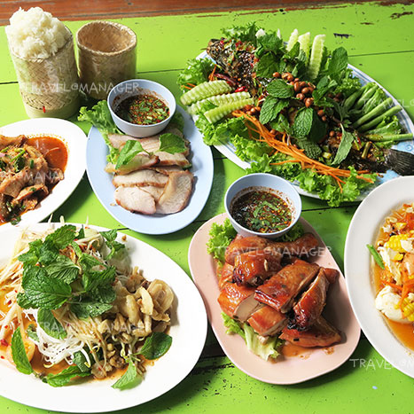

หน้าหลัก
ร้านอาหารไทย
ร้านอาหารจีน
เครื่องดื่ม/คาเฟ่
บาร์/ผับ
1. หมูจุ่มหมูกระทะคุณเปิ้ล
ร้านคุณเปิ้ลเป็นหมูกระทะมีทั้งหมด 3 ราคาคือ ชุดเล็ก 350 บาท ชุดกลาง 450 บาท ชุดใหญ่ 550 บาท
เปิดบริการทุกวัน : 15.30 - 00.00 น.
โทร 02 277 6533
2. ใบบัว - อาหารเชียงตุง
ร้านอาหารเหนือและอาหารเชียงตุง ซึ่งเจ้าของร้านเป็นคนเชียงตุงแท้ๆ สูตรอาหารส่วนใหญ่จึงมีความเป็นเชียงตุง
รวมถึงวัตถุดิบต่างๆก็นำเข้ามาจากเชียงตุง
เปิดบริการทุกวัน : 10.30น.-21.00น.
โทร 02-690-3166
3. ขาหมู เหม่งจ๋าย
ร้านข้าวขาหมูเจ้าเก่า รสชาติเข้มข้น เปิดมานานกว่า 20 ปี และสำหรับคนที่ไม่ทานขาหมุทางร้านก็มีเป็นข้าวราดแกงให้เลือกมากมาย ราคา 60 บาทขึ้นไป
เปิดบริการทุกวัน : 07.00น.-17.30น.
โทร 02-274-4170
4. ก๋วยเตี๋ยวเนื้อนายซ้งรสเยี่ยม
ร้านตั้งอยู่ติดถนนใหญ่เลย ตัวร้านจะเป็นร้านแบบเปิดโล่งขนาดไม่ใหญ่ มีโต๊ะให้บริการเยอะ รสชาติดีตัวน้ำซุปของทางร้านจะค่อนข้างใสไม่ข้นมากราคาและคุณภาพนั้นถือว่าสมเหตุสมผล ราคา 60-200 บาท
เปิดบริการทุกวัน : 09.00น.-20.00น.
โทร 086-196-1047
5. กวง ซีฟู้ดทะเลเผา
ร้านอาหารทะเลซีฟู้ด ร้านใหญ่โดดเด่นที่ตั้งอยู่ริมถนนรัชดาภิเษก เป็นตึก 3 ชั้น มีโต๊ะรองรับจำนวนมาก เหมาะกับทานข้าวกับครอบครัว ที่สำคัญวัตถุดิบสดใหม่ทุกวัน
เปิดบริการทุกวัน : 11.00น.-2.30น.
โทร 02-645-3939
6. ก๋วยเตี๋ยวไก่ลุงเลื่อน
เป็นอีกหนึ่งร้านดังย่านห้วยขวาง ที่ชาวบ้านแถวนี้รู้จักกันเป็นอย่างดี ความดีงามของที่นี่คือเนื้อไก่เปื่อย ละลายในปาก รวมไปถึงน้ำซุปเคี่ยวกระดูกไก่ ที่หอม หวาน ละมุนลิ้น
เปิดบริการทุกวัน : 10.00น. - 21.00น.
โทร 085-519-3926
 7. สมยงตำซั่ว
เป็นร้านอาหารอีสาน แต่ขอบอกเลยว่าที่นี่เค้าแซ่บมาก มีเมนูอาหารอีสานให้เลือกหลากหลาย ไม่ว่าจะเป็นเมนูส้มตำ ยำ ต้มแซ่บ ไก่ย่าง ลาบ น้ำตก สารพัดเมนูที่ชวนน้ำลายไหล ดีต่อใจสุดๆ
เปิดบริการทุกวัน 24 ชั่วโมง
โทร 083-982-7498